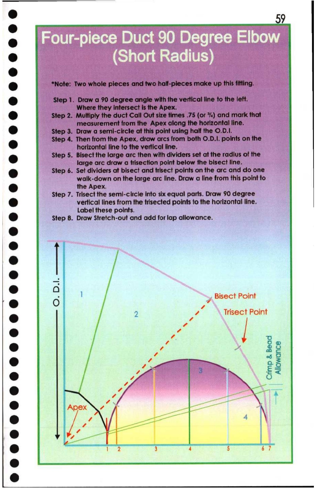

59. Four-piece Short Radius Duct 90 Degree Elbow

@
(ie) *Note: Two whole pieces and two half-pieces make up this fitting.
e@ Step 1. Draw a 90 degree angle with the vertical line to the left.
Where they intersect is the Apex.
@ Step 2. Multiply the duct Call Out size times .75 (or %) and mark that
measurement from the Apex along the horizontal line.
8 Step 3. Draw a semi-circle at this point using half the ©.D.1.
Step 4. Then from the Apex, draw arcs from both O.D.1. points on the
td horizontal line to the vertical line,
@ Step 5. Bisect the large arc then with dividers set at the radius of the
large arc draw a trisection point below the bisect line.
Oo Step 6. Set dividers at bisect and trisect points on the arc and do one
walk-down on the large arc line. Draw a line from this point to
e@ the Apex.
Step 7. Trisect the semi-circle into six equal parts. Draw 90 degree
@ vertical lines from the trisected points to the horizontal line.
Label these points.
| Ce) Step 8. Draw Stretch-out and add for lap allowance.
e
* Of,
® |
@ —
e » 28
oS
® Py 25
: ) j
@ UN Oo *
a /
®